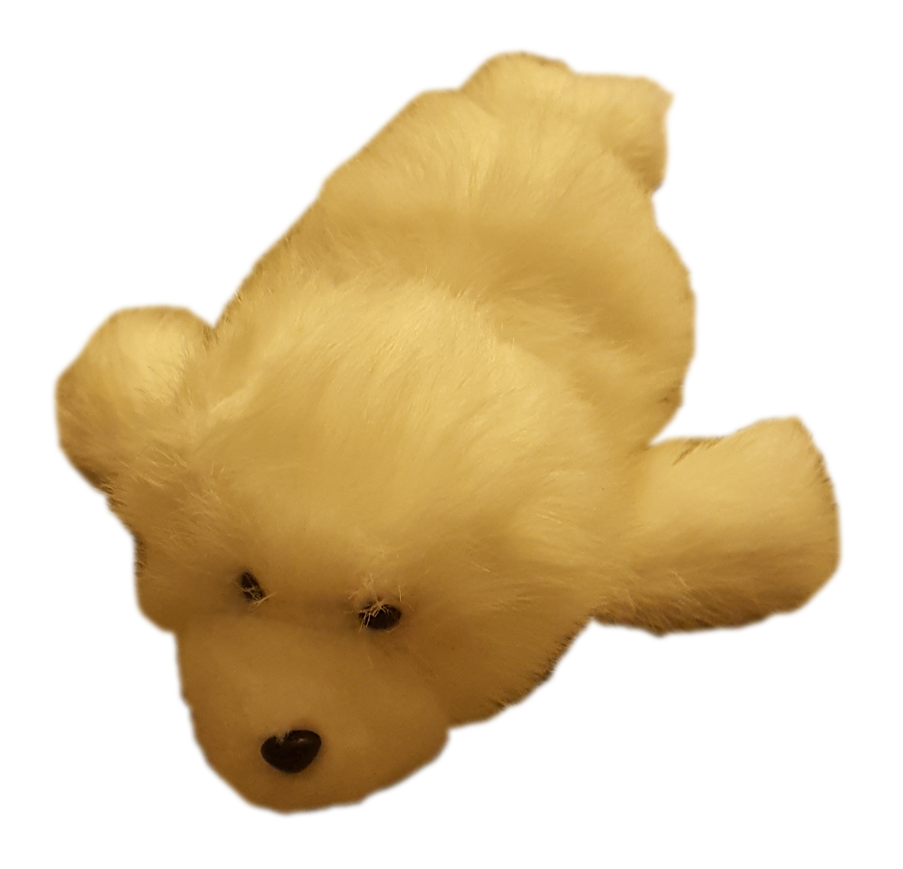
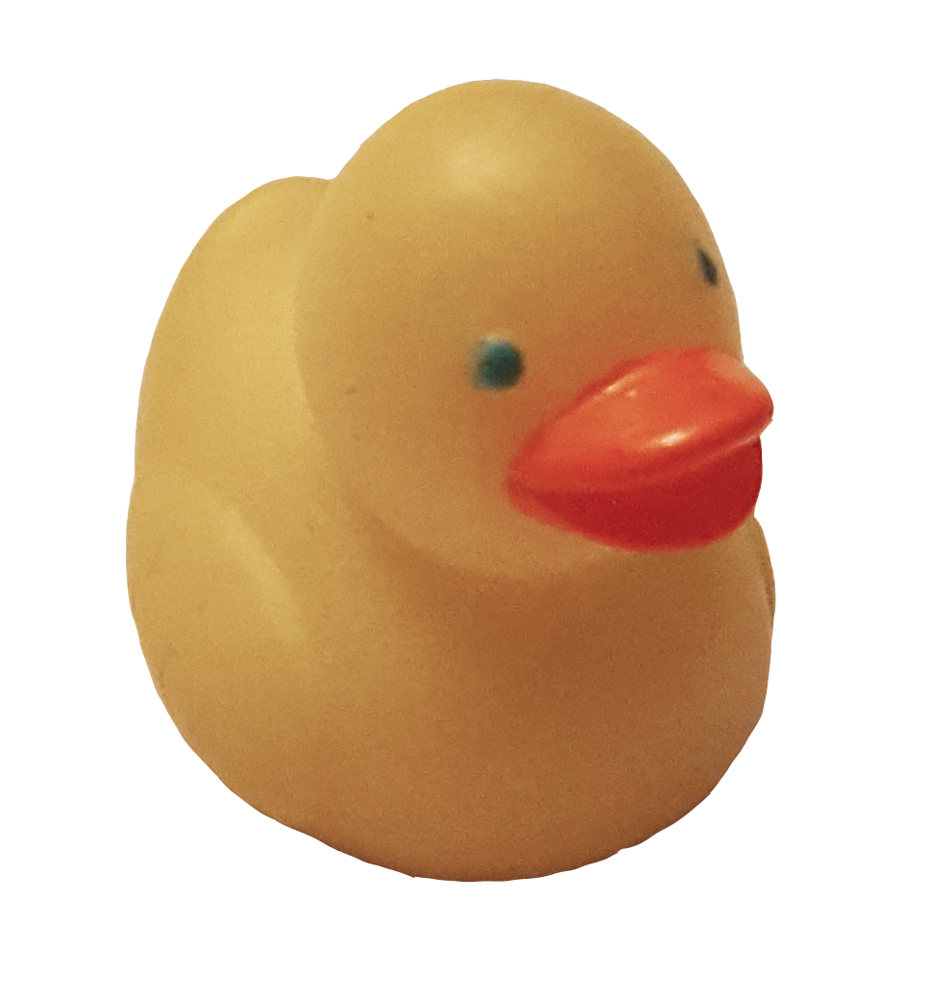
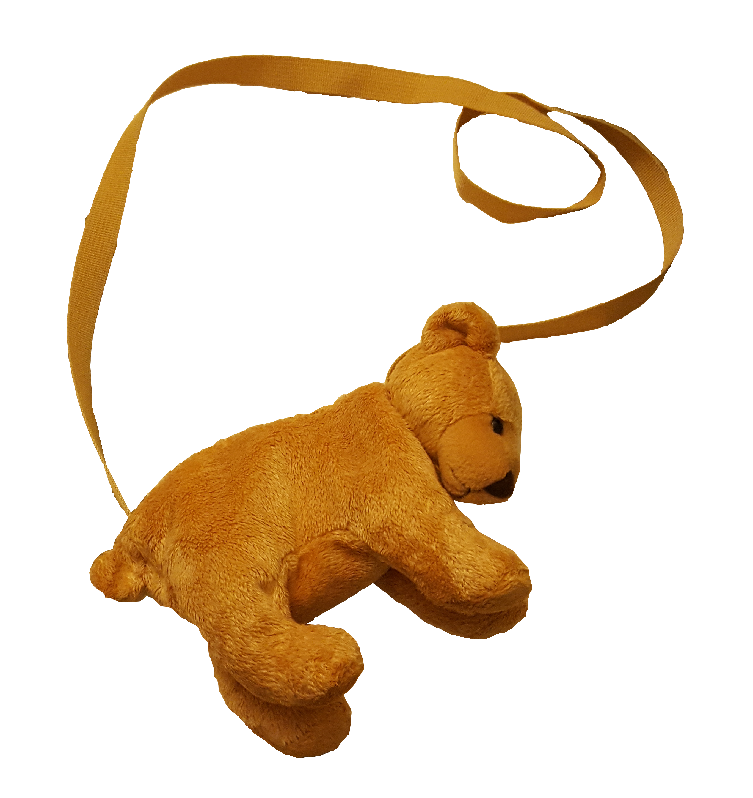
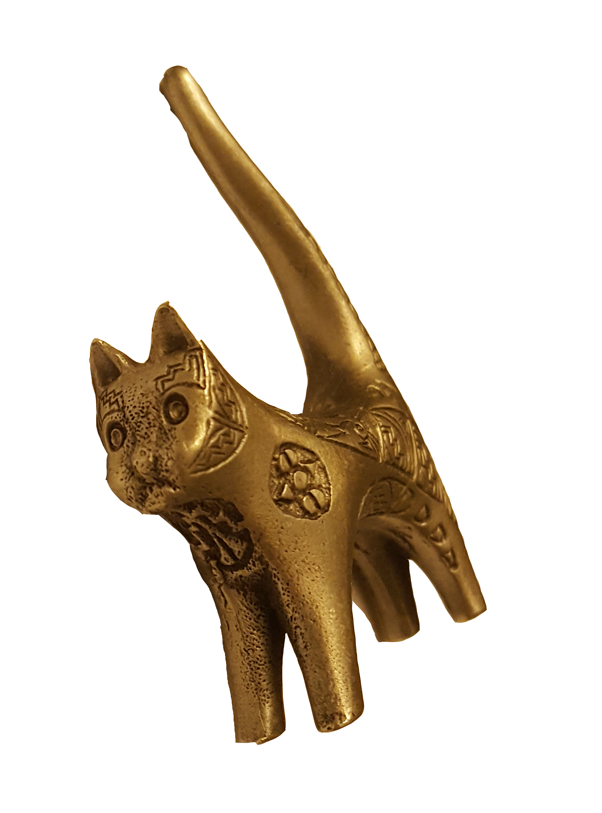

lockers
friend's house
classroom






lockers
friend's house
classroom
they gave me this stuffed bear after a math competition i did in 8th grade (?) was it Kangaroo math?? why did they give me a bear..? i'm not sure why i tried so hard to be a math person but it clearly didn't work out. anyways, getting a stuffed bear was better than any math that i did..
this silly looking seal i made in 7th grade Life Skills. they stopped having Life Skills as a class a few years later which is unfortunate because all we did was make cookies and sew. during the sewing unit we made pillows and i chose this disgusting shade of hot pink fabric to use. it was a still a good time.
Emily made us all little things when she took ceramics in high school. i think they might have all been bowls actually. my middle school friends used to call me "Linny" but we don't talk so much anymore. i usually just kept coins in this bowl..
i think Marissa gave me this tiny duck magnet in 6th grade. she had a bunch in her locker. she also had these cool color changing pencils from the fire department because her dad was a fireman ??
there was a fundraiser at school where there was just a bunch of things you could buy in the gym as gifts for family and friends, but i bought myself this bear bag because i liked it.
i forget who had all these metal animals in middle school (it might have been Rhea) but we each got one and this cat was supposed to be for Kayla because she had 3 of them. i somehow managed to get the cat instead.